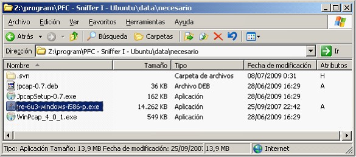
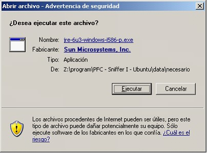
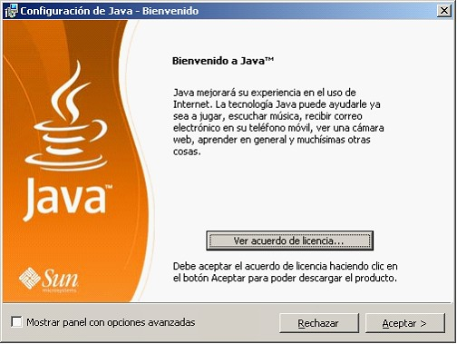
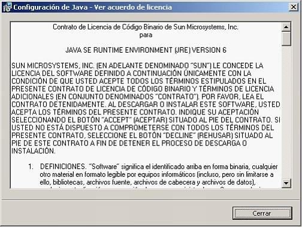
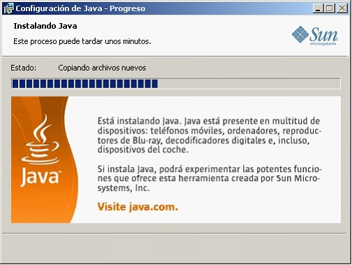
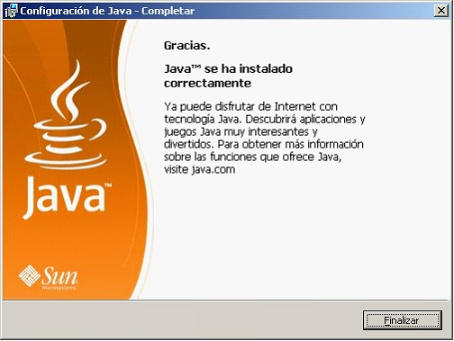

Instalacion windows
En primer lugar se ha de descargar el software necesario. Para ello basta con que descarguemos la versión adecuada (en nuestro caso la J2SE 6.0) desde la página: http://java.sun.com/javase/downloads/index.jsp
Una vez en esa página, simplemente se ha de buscar la versión disponible para el sistema operativo en el cual se vaya a instalar. Se debe aceptar la licencia y posteriormente aparecerá la ventana de descarga de la Máquina Virtual de Java. La descarga se puede efectuar o bien a través del servidor FTP de Sun o bien a través de la página web. Siempre que su conexión de red le permita utilizar FTP, es recomendable que lo descargue de este modo debido a que es más fiable, seguro y rápido; de lo contrario utilice http. Seleccione el directorio en el que desea almacenar la descarga independientemente de dónde desee instalar la aplicación posteriormente.
El archivo de instalación para Windows es un ejecutable (.exe). Para instalarlo simplemente se deben seguir las indicaciones del programa y decidir el directorio en el cual se desea instalar la estructura de directorios del mismo. Una vez instalado, se puede borrar el archivo de instalación.

Para instalar JAVA buscar en el de aplicaciones auxiliares el archivo ejecutable jre-6u3-windows-i586-p.exe y pulsar doble clic sobre el fichero.
Aceptamos la Advertencia de seguridad pulsando el botón Ejecutar.


Comienza el asistente de la instalación del programa, para continuar pulsamos Aceptar.

Debemos aceptar el acuerdo de licencia de Java pulsando el botón Aceptar.

Comienza la extracción e instalación de los ficheros.

Se han instalado los archivos y para finalizar la instalación pulsar el botón Finalizar.
Una vez instalado, se deben configurar las variables de entorno. La variable de entorno que utiliza Java para indicarle dónde encontrar las clases de Java se denomina CLASSPATH. Es necesario añadirle las bibliotecas de clase a esta variable (directorio lib) a menos que instalara el JDK en la opción por defecto, en cuyo caso el JDK encontrará dichas bibliotecas sin problemas.
A su vez es necesario modificar el PATH e incluir en él el directorio bin de la JRE instalada.
Las variables de entorno se pueden modificar haciendo clic en “Mi PC” – Propiedades > Opciones Avanzadas.
Copyright © 2010, <Carlos Mardones Muga>
Created with the Freeware Edition of HelpNDoc: Easy CHM and documentation editor